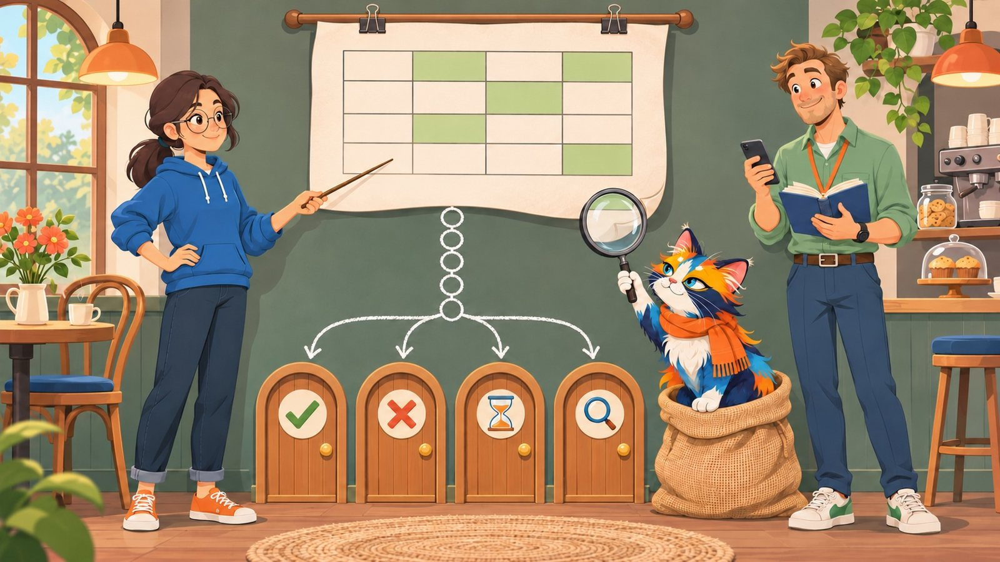

Сначала вспомним
Котейка запустил тест на новую выпечку. За 3 дня вилка эффекта вышла ±3%. Сколько всего дней нужно, чтобы она сузилась до ±1.5%?
Вчетверо больше гостей — вдвое точнее. Чтобы вилка стала вдвое уже, нужно вчетверо больше гостей, то есть около 12 дней при том же трафике. Это было в шаге 5.

Давай запустим новое меню на недельку и посмотрим, что выйдет.
Что Алисе спросить первым?
Сначала MDE, потом тест. За неделю при 20 000 гостей в день тест уверенно замечает только эффекты примерно от 4.5%. Если Бобу важен +2%, неделя ничего не скажет, и это лучше узнать до запуска. Это было в шаге 9.
Шаг 11 из 11
Читаем отчёт и решаем
После шага ты сможешь выбрать по отчёту одно из четырёх решений и рассказать его за три минуты.

В отчёте зелёная клетка и p = 0.002. Катим? Не торопись: сначала прочитай то, что обычно пропускают, — срок теста, доли групп и вилку.
В шаге 10 мы собрали ловушки, которые лечатся правилами до запуска. Теперь отчёт уже готов. Сначала поищем подвохи в графиках и цифрах, потом пройдём по дереву из пяти развилок и решим восемь отчётов. В конце — как рассказать результат так, чтобы за три минуты стало ясно, что делать.
Что где лежит в отчёте
Так выглядит отчёт почти любого A/B-теста. В твоём отчёте колонки могут называться иначе, а смысл у них тот же.
| Метрика | Контроль | Тест | 3Разница | 4Вилка 95% | 5p-value |
|---|---|---|---|---|---|
| Конверсия в заказ · главная | 10.02% | 10.23% | +2.1% | [+0.8; +3.4] | 0.002 |
| Средний чек · сторожевая | 612 ₽ | 610 ₽ | −0.3% | [−1.1; +0.5] | 0.47 |
- 1День N из M. Дошёл ли тест до срока, который выбрали до запуска. Если нет, решение ещё рано принимать.
- 2Доли групп. Совпадают ли с планом. Если расходятся сильнее, чем бывает случайно, остальное читать нельзя.
- 3Разница в процентах от контроля. +2.1% — это не «плюс 2 заказа из 100», а 102 заказа на 1000 гостей вместо 100.
- 4Вилка. Зелёная заливка — вся вилка выше нуля, красная — вся ниже, без заливки — вилка задевает ноль.
- 5p-value — насколько удивительна такая разница в мире без эффекта. Цвет у неё тот же, что у вилки: они говорят об одном.
У сторожевой метрики вилка без заливки, p = 0.47. Что это значит?
Вилка от −1.1 до +0.5% задевает ноль, поэтому клетка без цвета. Это значит «по этим данным не отличить от нуля». Что чек упал больше чем на 1.1%, данные почти исключают, а меньшее падение — нет. Поэтому у серых метрик смотрят на край вилки.
Где Боб приукрасил дашборд
Прежде чем читать таблицу, научимся не верить картинке на слово. Цифры могут быть честными, а картинка — нет. Боб принёс пять графиков. Найди в каждом, в чём подвох.
«Тест обогнал контроль в два с половиной раза!»
Шкала начинается с 10%, поэтому столбик 10.5% выглядит в два с половиной раза выше, чем 10.2%. От нуля это почти одинаковые столбики: тест лучше на 3%, а не в 2.5 раза.
Как это выглядит честно:
«Конверсия в новом разделе выросла на 50%!»
Было 2 заказа из 40 гостей, стало 3 из 40. Формально это +50%, но один заказ туда-сюда — чистая случайность. Когда видишь большой процент, спроси: «а в штуках сколько?»
Как это выглядит честно:
«Три дня подряд тест впереди — эффект стабильный!»
Тест шёл 21 день, и разница скакала то вверх, то вниз вокруг нуля. Боб показал только три удачных дня подряд. Смотри на весь период — и на итог, посчитанный заранее запланированным способом.
Как это выглядит честно:
«Через приложение заказывают в разы больше, чем по телефону!»
Заказов через приложение вдвое больше: 2 400 против 1 200. Но Боб увеличил стакан вдвое и в высоту, и в ширину, поэтому по площади он вчетверо больше, а глаз сравнивает именно площадь. Честно — столбики одной ширины.
Как это выглядит честно:
«Растём на 40% в неделю — к Новому году будет миллион заказов!»
Шесть недель после запуска заказы и правда росли на 40% в неделю: новое часто растёт быстро. Но всё правее последней точки — фантазия Боба. Так рост обычно не продолжается: приложение скачают все желающие, и кривая выйдет на плато.
Как это выглядит честно:
Пять вопросов к цифре и раунды со стаканом и пунктиром — из книги: Дарелл Хафф, «Как лгать при помощи статистики»
Где Боб приукрасил цифры
Теперь подвох не в рисунке, а в самих числах. Пять фраз из отчётов Боба.
«За год больше всего жалоб на курьеров пришлось на вечер пятницы — снимаем курьеров с пятничных вечеров!»
Вечером в пятницу жалоб больше, потому что в это время больше всего заказов. Если считать жалобы на 1000 вечерних заказов, вечер пятницы — самый спокойный, а хуже всех вечер вторника.
Как это выглядит честно:
«Конверсия выросла на 3%!» Какой из графиков описывает фразу Боба?
«Выросла на 3%» можно понять двумя способами: прибавилось 3 процента (с 3% до 6%, вдвое) или выросла на 3% от себя (с 3% до 3.09%). Между ними разница в 33 раза. Спрашивай, сколько было и сколько стало.
«После обновления активных пользователей стало на 18% больше!»
В новой версии активным стали считать и того, кто открыл приложение в фоне, например ради уведомления. Мир не изменился — изменился учёт. Если пересчитать по старому правилу, линия ровная. Перед тем как радоваться скачку, проверь, не менялось ли в этот день, что и как считают.
Как это выглядит честно:
Новый онбординг даёт +26% к заказам!
Что спросить первым?
Боб сравнил новый онбординг с прошлогодним, а не с тем, что работает сейчас. Нынешний онбординг уже даёт +24% к прошлогоднему, так что новый лучше текущего всего на 1.6%. Число без «по сравнению с чем» ничего не значит.
Как это выглядит честно:
«Новое меню не изменило время приготовления: 12 минут и там, и там».
Среднее время приготовления, мин
В новом меню есть быстрые блюда, которые готовятся за 3–4 минуты. Фильтр «короче 5 минут — ошибка логов» выбросил именно их, и вместе с ними эффект. Так же правило «доставка дольше 90 минут — сбой логов» спрятало бы тот вечер, когда у курьеров в тесте сломалось приложение. Прежде чем чистить данные, проверь, не чистишь ли ты сам эффект.
Как это выглядит честно:
В тесте появились быстрые заказы — их и выбросил фильтр
Идея из книги: Дарелл Хафф, «Как лгать при помощи статистики». Раунд с фильтром — из книги: Джозеф О’Коннор, Иан Макдермотт, «Искусство системного мышления»
Цифры честные, а смотреть невозможно
Бывает, что Боб ничего не приукрашивает, но график всё равно сбивает с толку. Три примера.
Боб хочет показать, что тест поднял конверсию. Что не так с графиком?
Метрики теста, разница с контролем
Боб вывалил на график все метрики сразу, и главная утонула. Честнее: главную линию — ярко, остальные — серым, а в заголовок — вывод, а не «Метрики теста».
Как это выглядит честно:
Конверсия в тесте выше контроля все 21 день
«С середины месяца средний чек обогнал заказы — гости стали заказывать дороже!»
Заказы (слева) и средний чек (справа)
Заказы и средний чек нарисованы на одном графике с двумя шкалами. Где они «пересекутся», зависит только от того, как Боб подобрал шкалы. Честно — два графика с общей осью дней: заказы чуть растут, чек чуть падает, и никакого «обогнал».
Как это выглядит честно:
Заказы чуть растут, средний чек чуть падает
Вопрос был: на что чаще всего жалуются гости? Что должно быть выделено цветом?
Причины низких оценок за месяц
Яркий цвет — это указка: туда посмотрят первым делом. Боб выделил «дорого», потому что хотел поговорить о ценах, а вопрос был про самую частую жалобу. Честно — выделить долгую доставку и написать это в заголовке.
Как это выглядит честно:
Чаще всего недовольны долгой доставкой
Идея из книги: Коул Нассбаумер Нафлик, «Данные: визуализируй, расскажи, используй»
Пять развилок и четыре решения
Отчёт читают в одном и том же порядке. Сначала проверяют, можно ли ему верить, и только потом смотрят на главную метрику. На каждой развилке можно остановиться.
- Доли групп совпадают с планом?Если расходятся сильнее, чем бывает случайно, дальше не читаем. Нет → ищем баг
- Тест дошёл до запланированного конца?Решение принимают в день, записанный до запуска. Нет → ждём
- Эффект не слишком хорош?+12% за неделю или зелёные все метрики сразу — сначала проверяем данные. Слишком хорош → ищем баг
- Где вилка главной метрики?Целиком выше нуля и порога пользы — идём дальше. Задевает ноль — эффект не доказан; задевает порог — не доказана польза. Называем края вилки. Не выше → не катим
- Сторожевые не хуже?Мало, чтобы они были серыми: край вилки не должен заходить в опасную зону. Вред не исключён → не катим Всё в порядке → катим
«Ищем баг» — про сам эксперимент и данные. Если сломалась фича, а данные честные, это «не катим».
Первый отчёт читаем вместе
Главная метрика в тренажёре везде — конверсия в заказ. Зелёным и красным отмечены вилки целиком выше или ниже нуля.
1. Фото блюд крупнее
| Метрика | Контроль | Тест | Разница | Вилка 95% | p-value |
|---|---|---|---|---|---|
| Конверсия в заказ · главная | 10.02% | 10.23% | +2.1% | [+0.8; +3.4] | 0.002 |
| Средний чек · сторожевая | 612 ₽ | 610 ₽ | −0.3% | [−1.1; +0.5] | 0.47 |
| Отмены · сторожевая | 3.10% | 3.12% | +0.5% | [−7.1; +8.1] | 0.90 |
Зелёное, p = 0.002. Катим?

Давай пройдём по развилкам. Нажимай.
- 1. Доли групп50.0 / 50.0 при плане 50 / 50. Деление в порядке, отчёту можно верить.
- 2. Срок21 день из 21. Тест дошёл до конца, решать можно сегодня.
- 3. Не слишком ли хорошо?+2.1% — правдоподобный размер для фото. Скачка на десятки процентов нет.
- 4. Вилка главнойОт +0.8 до +3.4%: целиком выше нуля и выше порога пользы +0.5%. В штуках: из 1000 гостей заказывают 102 вместо 100.
- 5. СторожевыеЧек: худший край −1.1%, это меньше, чем мы готовы потерять. Отмены шумные, вилка широкая: её края стоит назвать в отчёте, но ни ухудшения, ни улучшения не видно.
«Катим» станет доступно, когда откроешь доли групп: при SRM остальной отчёт читать нельзя.
Все пять развилок пройдены. Доли ровные, тест дошёл до конца, эффект правдоподобный, вилка целиком выше порога пользы, сторожевые не ухудшились. Катим.
Два отчёта с подсказкой
Сначала реши сам. Если не знаешь, с чего начать, открой подсказку. После ответа появятся пройденные развилки.
2. Кнопка «Добавить соус»
| Метрика | Контроль | Тест | Разница | Вилка 95% | p-value |
|---|---|---|---|---|---|
| Конверсия в заказ · главная | 9.98% | 10.10% | +1.2% | [−1.0; +3.4] | 0.29 |
| Средний чек · сторожевая | 605 ₽ | 611 ₽ | +1.0% | [−0.4; +2.4] | 0.16 |
Подсказка
Посмотри на вторую развилку: какой сегодня день теста и какой записан в плане?
Прошла только треть теста. Сейчас вилка ±2.2%, а к 21-му дню гостей станет втрое больше и она сузится примерно до ±1.3%. Решение по плану принимают через 21 день, а остановиться сейчас — то самое подглядывание. Ждём.
Пройденные развилки
- Доли 50.1 / 49.9 — обычный разброс
- Срок: 7 дней из 21 → ждём
- Вилку и сторожевые читаем на 21-й день
3. Новый экран оплаты
| Метрика | Контроль | Тест | Разница | Вилка 95% | p-value |
|---|---|---|---|---|---|
| Конверсия в заказ · главная | 9.91% | 10.39% | +4.8% | [+2.9; +6.8] | < 0.001 |
| Выручка на пользователя | 61.4 ₽ | 64.1 ₽ | +4.4% | [+2.1; +6.7] | < 0.001 |
Подсказка
Начни с первой развилки. При 400 000 пользователей доля группы при честной монетке обычно гуляет в пределах 49.8–50.2%.
Всё зелёное, но в тесте примерно на 5 000 человек меньше, чем должно быть при 50 / 50. При 400 000 пользователей перекос в 16 ширин случайно не бывает. Похоже, часть людей в тесте потерялась (например, экран у них падает), и остались самые активные. Ищем баг.
Пройденные развилки
- Доли 51.3 / 48.7 при плане 50 / 50 → ищем баг
- Зелёные клетки пока не читаем: группы несравнимы
Пять отчётов без подсказок
Теперь сам: пройди по пяти развилкам и выбери решение. Развилки, которые прошла Алиса, появятся после ответа.
4. Рекомендации «Вам понравится»
| Метрика | Контроль | Тест | Разница | Вилка 95% | p-value |
|---|---|---|---|---|---|
| Конверсия в заказ · главная | 10.05% | 10.03% | −0.2% | [−1.2; +0.9] | 0.69 |
| Средний чек · сторожевая | 609 ₽ | 612 ₽ | +0.5% | [−0.2; +1.2] | 0.14 |
Тест длинный и чувствительный: эффект в 1.5% он заметил бы в 8 случаях из 10. Вилка от −1.2 до +0.9% почти исключает эффекты больше +0.9%. В штуках: из 1000 гостей рекомендации добавят не больше 1 заказа, а поддержка стоит денег. Не катим.
Пройденные развилки
- Доли 50.0 / 50.0
- Срок: 28 дней из 28
- Эффект не подозрительный
- Вилка узкая вокруг нуля: важного эффекта нет → не катим
5. Переснять всё меню у фотографа
| Метрика | Контроль | Тест | Разница | Вилка 95% | p-value |
|---|---|---|---|---|---|
| Конверсия в заказ · главная | 10.00% | 10.09% | +0.85% | [+0.2; +1.5] | 0.010 |
| Средний чек · сторожевая | 608 ₽ | 609 ₽ | +0.1% | [−0.3; +0.5] | 0.63 |
Значимо, и +0.85% больше порога. Катим!
Эффект есть: ноль вне вилки, из 1000 гостей заказывают примерно на 1 больше. Но окупаемость не доказана: данные согласуются и с +1.5%, и с +0.2%, а это ниже порога. Значимо ещё не значит «окупится». По правилу, записанному заранее, не катим. Если бы правило было «лучшая оценка выше порога», ответ был бы другим. Поэтому его и пишут до цифр.
Пройденные развилки
- Доли 50.0 / 50.0
- Срок: 42 дня из 42
- +0.85% — правдоподобный размер
- Вилка выше нуля, но задевает порог пользы +0.5% → не катим
6. Новый экран корзины
| Метрика | Контроль | Тест | Разница | Вилка 95% | p-value |
|---|---|---|---|---|---|
| Конверсия в заказ · главная | 10.00% | 10.03% | +0.3% | [−2.1; +2.7] | 0.81 |
| Заказов на пользователя | 0.120 | 0.134 | +11.8% | [+9.0; +14.6] | < 0.001 |
| Средний чек | 602 ₽ | 603 ₽ | +0.2% | [−1.2; +1.6] | 0.78 |
| Выручка на пользователя | 72.2 ₽ | 80.9 ₽ | +12.0% | [+9.1; +14.9] | < 0.001 |
Рекорд: +12% выручки за неделю! Катим.
Заказавших гостей столько же (конверсия +0.3%), чек тот же, а заказов на гостя на 12% больше, и всё за неделю. Похоже, часть заказов в тесте записывается дважды. Ищем баг: сверяем заказы в отчёте с кассой кафе и ищем дубли. Если рост подтвердится, это отличная новость, но сначала проверка.
Пройденные развилки
- Доли 50.0 / 50.0: деление в порядке, но баг в подсчёте ещё возможен
- Срок: 7 дней из 7
- +12% выручки за неделю, 8 ширин колокола: слишком хорошо → ищем баг
7. Новая иконка приложения
| Метрика | Контроль | Тест | Разница | Вилка 95% | p-value |
|---|---|---|---|---|---|
| Конверсия в заказ · главная | 10.00% | 10.04% | +0.4% | [−0.9; +1.7] | 0.55 |
| …ещё 13 метрик | ±1% | задевают ноль | от 0.12 до 0.94 | ||
| Повторные заказы за неделю | 2.31 | 2.45 | +6.1% | [+0.6; +11.6] | 0.03 |
Повторные заказы выросли на 6%! Катим.
Главная метрика не изменилась. Из 15 метрик одна «прокрасилась» с p = 0.03, а при 15 метриках хотя бы одна такая в A/A бывает примерно в половине случаев. Это не повод катить. Если идея про повторные заказы интересна, её проверяют отдельным тестом, где это главная метрика.
Пройденные развилки
- Доли 50.0 / 50.0
- Срок: 21 день из 21
- Эффект не подозрительный
- Вилка главной задевает ноль; зелёная метрика не главная → не катим
8. Дешёвый платёжный сервис
| Метрика | Контроль | Тест | Разница | Вилка 95% | p-value |
|---|---|---|---|---|---|
| Конверсия в заказ · главная | 10.00% | 9.98% | −0.2% | [−1.9; +1.5] | 0.82 |
| Средний чек · сторожевая | 610 ₽ | 611 ₽ | +0.1% | [−1.0; +1.2] | 0.86 |
| Ошибки оплаты на 1000 оплат · сторожевая | 3.1 | 4.0 | +29% | [−5; +63] | 0.10 |
Всё серое, значит, ничего не сломалось. Переезжаем!
Главная в порядке: вилка −1.9…+1.5% не заходит за допустимые −2%. А у ошибок оплаты «не значимо» не значит «не выросли». В штуках: из 1000 оплат ошибались 3, стало 4. Вилка от −5 до +63% согласуется и с отсутствием вреда, и с ростом ошибок почти на две трети. Вред не доказан — это ещё не «вреда нет». Не катим: сначала разбираемся, откуда лишние ошибки, потом новый тест с достаточным числом оплат.
Пройденные развилки
- Доли 50.0 / 50.0
- Срок: 21 день из 21
- Эффект не подозрительный
- Конверсия: худший край −1.9%, допустимо до −2%
- Ошибки оплаты: вилка до +63%, вред не исключён → не катим
Как рассказать результат руководителю
Тест посчитан. Теперь его нужно рассказать так, чтобы за три минуты стало понятно, что делать. Порядок простой:
Какой заголовок лучше для отчёта про новый экран оплаты?
Хороший заголовок — это вывод и решение: прочитав только его, человек уже знает главное. Был 41 заказ на 1000 гостей, стало 43, а вилка от +2 до +8% целиком выше нуля. Цифры, вилка и подробности — ниже, как доказательства.
Тест трёх минут
Собери отчёт из фраз: нажимай «В отчёт» в нужном порядке, а лишнее отправляй в приложение. Порядок в отчёте можно менять стрелками.
Идея из книги: Коул Нассбаумер Нафлик, «Данные: визуализируй, расскажи, используй»
Пять «если…, то я…»
Знание превращается в привычку, когда заранее решено, что ты сделаешь в знакомой ситуации. Вот пять ситуаций из курса.
- Боб говорит «запустим на недельку»,спрошу, какой эффект тест должен заметить (шаг 9).
- хочется остановить тест на 5-й день,посмотрю, какой срок записан в плане (шаг 10).
- из 20 метрик зелёная одна,спрошу, что с главной (шаг 10).
- отчёт показывает +12% за неделю,сначала поищу баг (шаг 10).
- тест вышел серым,назову края вилки: какой эффект данные исключают (шаг 6).
Вспомни последний спор о тесте в твоей команде. Какое из пяти «если» там случилось?
Отчёт → одно из четырёх решений
- Сначала служебные строки: доли групп и «день N из M». Если что-то не так, цифры эффекта не читаем.
- Слишком хорошо — сначала ищем баг. Малое p исключает шум, но не ошибку подсчёта.
- Вилка главной метрики сравнивается с нулём и с порогом пользы. Значимо ещё не значит «окупится».
- Серая сторожевая не значит «вреда нет». Смотрим, насколько плохо может быть на краю вилки.
- Решение одно из четырёх: катим, не катим, ждём или ищем баг.
- Картинке не верим на слово: шкала от нуля? сколько это в штуках? какой период показан? с чем сравнивали?
- Рассказываем выводом: заголовок — что получилось и что делаем, цифры — как доказательства.
Что запомнить
- Сравниваем одновременно, делим случайно. «До и после» и «кто включил против кто нет» смешивают эффект со всем остальным.
- Разница есть всегда. Даже одинаковые группы отличаются, вопрос только в том, больше ли разница обычного шума.
- Средние ложатся колоколом, и вчетверо больше людей делают его вдвое уже.
- Результат — это вилка. Смотрим, где она относительно нуля и порога пользы. Если задевает ноль, называем края.
- p-value — насколько удивительна такая разница, если эффекта нет. Это не вероятность того, что фича работает.
- Ошибки бывают двух видов: ложная тревога примерно в одном пустом тесте из двадцати и пропуск, когда тест короткий.
- MDE считают до запуска. Вдвое меньший эффект стоит вчетверо больше людей.
- Правила — до цифр. Не подглядываем, главную и сторожевые метрики выбираем заранее, доли групп проверяем.
- Средний ноль может прятать плюсы и минусы, но срез, найденный задним числом, — только гипотеза для нового теста.
- Победители завышены, а сравнение «кто включил против кто нет» может перевернуть вывод из-за состава групп. Перепроверяем и делим монеткой.
- Не верим картинке на слово: шкала от нуля? сколько это в штуках? какой период показан?
- Слишком хорошо — сначала ищем баг. Рост главной метрики не повод катить, если сломались сторожевые.
- Отчёт → одно из четырёх решений: катим, не катим, ждём или ищем баг.
- Рассказываем выводом: заголовок — что получилось и что делаем, цифры — как доказательства.

Курс пройден. Теперь отчёт A/B-теста можно читать самому и задавать аналитику правильные вопросы: какой MDE, сколько дней по плану, какая главная метрика и ровно ли поделились группы.
Шпаргалка для печати → Что решить до запуска, дерево отчёта, «если…, то я…» и пословицы всех шагов на двух листах. Распечатай и положи рядом, когда в следующий раз придёт отчёт.
Что дальше: «A/B без мифов» — старт в конце января